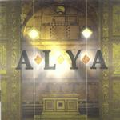

| Artist: | Shakary |
| Title: | Alya |
| Label: | Shakary SHK 30324-1 |
| Length(s): | 43+44 minutes |
| Year(s) of release: | 2000 |
| Month of review: | [04/2001] |
| 1) | Sunset | 4.52 |
| 3) | Time Trap | 5.53 |
| 4) | Starless Nights | 4.35 |
| 7) | The First Inquisition | 6.10 |
| 8) | Pain? | 1.41 |
CD2:
| 1) | Pain! | 3.29 |
| 2) | Sentence | 6.09 |
| 5) | Alya | 3.45 |
| 6) | Babylon | 6.16 |
The quietness of the vocal part continues in the piano dominated Lost Angels. A sad vocal line, the emotion shining through in the accented vocals of Maggini. A strong voice he has, but if you do not like accents, you are in trouble. The bass and guitar take it from there, but the music stays rather relaxed. The vocal part introduces an Oldfieldian guitar and keyboards a la old Genesis. Some filmic keyboards lead us into the next track. Quite some adventurous stuff here with the violin going out of its head.
Crackling wood and hesitatingly played acoustic guitar we find on the instrumental Starless Nights. Follow-up Seals is almost ten minutes the longest track on the two discs. This is also the most varied track so far and has both very powerful moments, strongly emotional and plodding with references to Hacketts guitar playing.
The titletrack is up next. Some trupmet on this somewhat Asiatic sounding track. The percolatingly played keyboards, the emotional vocals and the warm melodic chorus, make this into a very nice track again.
The First Inquisition has some references to Egdon Heath. Plenty of variation in the vocal part with some vocoded vocal parts. The guitar work is really strong and builds a very tense mood. Very strong track. The final short track is a short interlude before the next disc starts. A strong vocals melody and somewhat sad sounding.
The story in English is not always grammatical. Too bad about that.
Disc two is the answer to the final track on the first disc. It is an instrumental with its first part filled with trumpet. The song has a bit of a world music feel with dark sounds. Later we get into Steve Roach like territory.
Acoustic guitar brings us back to the style we are more or less used to from this band and its sister band Clepsydra. I guess if you need differences, then the music of Shakary is more filmic, this is more a typical story like concept album. Some Marillion like melodic guitar work then enters the picture, and it is time for a little variation. Some contrary sounding rhythms before a melodic vocal starts. The My Friend My Friend is of course also quite familiar.
The Dark Kingdom opens with film music. The singing is a bit disjointed here and the guitar sound has that vibrating effect Oldfield uses. The vocals are a bit like the vocals of Fruitcake, the Norwegian band. A crying guitar, a slow build-up, but somehat disappointingly trite ending.
The furious violin returns, a bit upbeat this one and the Oldfieldian guitar rears its head again. Alya we find also on this second disc, but in a live version. The chorus is the same, but the verses are different.
Babylon alternates urgency with melodic keyboards. A two faced track.
After New Angels we come to the final track, Open Skies which harbours violin and trumpet. A varied closer to this album.